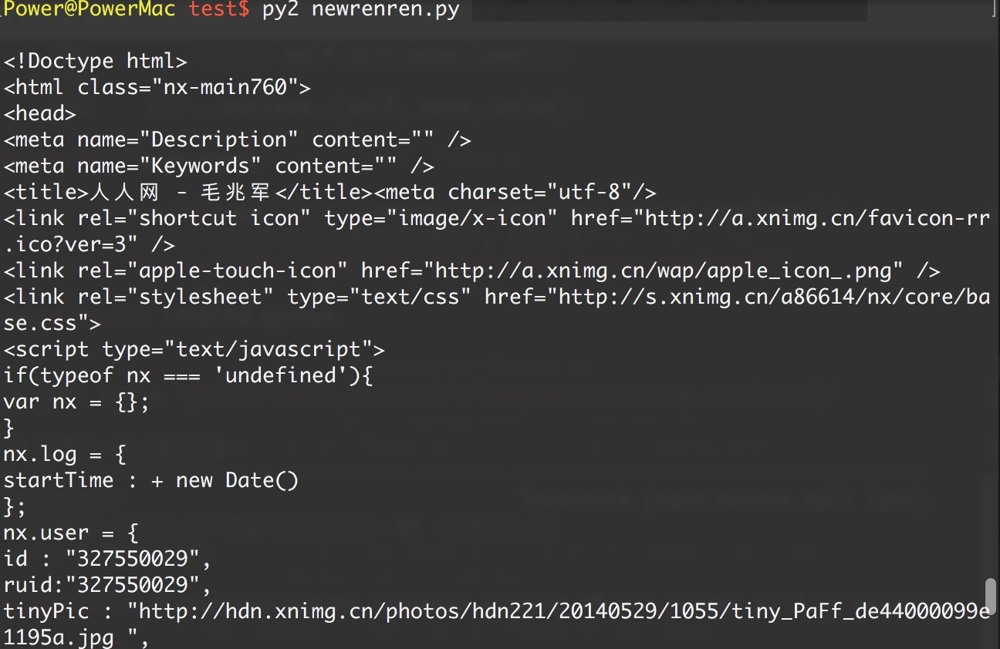

Handler处理器 和 自定义Opener
opener是 urllib.request.OpenerDirector 的实例，我们之前一直都在使用的urlopen，它是一个特殊的opener（也就是模块帮我们构建好的）。
但是基本的urlopen()方法不支持代理、cookie等其他的HTTP/HTTPS高级功能。所以要支持这些功能：
- 使用相关的
Handler处理器来创建特定功能的处理器对象； - 然后通过
urllib.request.build_opener()方法使用这些处理器对象，创建自定义opener对象； - 使用自定义的opener对象，调用
open()方法发送请求。
- 使用相关的
如果程序里所有的请求都使用自定义的opener，可以使用
urllib.request.install_opener()将自定义的 opener 对象 定义为 全局opener，表示如果之后凡是调用urlopen，都将使用这个opener（根据自己的需求来选择）
简单的自定义opener()
import urllib.request
# 构建一个HTTPHandler 处理器对象，支持处理HTTP请求
http_handler = urllib.request.HTTPHandler()
# 构建一个HTTPHandler 处理器对象，支持处理HTTPS请求
# http_handler = urllib.request.HTTPSHandler()
# 调用urllib.request.build_opener()方法，创建支持处理HTTP请求的opener对象
opener = urllib.request.build_opener(http_handler)
# 构建 Request请求
request = urllib.request.Request("http://www.baidu.com/")
# 调用自定义opener对象的open()方法，发送request请求
response = opener.open(request)
# 获取服务器响应内容
print (response.read().decode())
这种方式发送请求得到的结果，和使用urllib.request.urlopen()发送HTTP/HTTPS请求得到的结果是一样的。
如果在 HTTPHandler()增加 debuglevel=1参数，还会将 Debug Log 打开，这样程序在执行的时候，会把收包和发包的报头在屏幕上自动打印出来，方便调试，有时可以省去抓包的工作。
# 仅需要修改的代码部分：
# 构建一个HTTPHandler 处理器对象，支持处理HTTP请求，同时开启Debug Log，debuglevel 值默认 0
http_handler = urllib.request.HTTPHandler(debuglevel=1)
# 构建一个HTTPHSandler 处理器对象，支持处理HTTPS请求，同时开启Debug Log，debuglevel 值默认 0
https_handler = urllib.request.HTTPSHandler(debuglevel=1)
ProxyHandler处理器（代理设置）
使用代理IP，这是爬虫/反爬虫的第二大招，通常也是最好用的。
很多网站会检测某一段时间某个IP的访问次数(通过流量统计，系统日志等)，如果访问次数多的不像正常人，它会禁止这个IP的访问。
所以我们可以设置一些代理服务器，每隔一段时间换一个代理，就算IP被禁止，依然可以换个IP继续爬取。
urllib.request中通过ProxyHandler来设置使用代理服务器，下面代码说明如何使用自定义opener来使用代理：
#urllib_proxy1.py
import urllib.request
# 构建了两个代理Handler，一个有代理IP，一个没有代理IP
httpproxy_handler = urllib.request.ProxyHandler({"http" : "124.88.67.81:80"})
nullproxy_handler = urllib.request.ProxyHandler({})
proxySwitch = True #定义一个代理开关
# 通过 urllib.request.build_opener()方法使用这些代理Handler对象，创建自定义opener对象
# 根据代理开关是否打开，使用不同的代理模式
if proxySwitch:
opener = urllib.request.build_opener(httpproxy_handler)
else:
opener = urllib.request.build_opener(nullproxy_handler)
request = urllib.request.Request("http://www.baidu.com/")
# 1. 如果这么写，只有使用opener.open()方法发送请求才使用自定义的代理，而urlopen()则不使用自定义代理。
response = opener.open(request)
# 2. 如果这么写，就是将opener应用到全局，之后所有的，不管是opener.open()还是urlopen() 发送请求，都将使用自定义代理。
# urllib.request.install_opener(opener)
# response = urlopen(request)
print (response.read().decode())
免费的开放代理获取基本没有成本，我们可以在一些代理网站上收集这些免费代理，测试后如果可以用，就把它收集起来用在爬虫上面。
免费短期代理网站举例：
如果代理IP足够多，就可以像随机获取User-Agent一样，随机选择一个代理去访问网站。
import urllib.request
import random
proxy_list = [
{"http" : "124.88.67.81:80"},
{"http" : "124.88.67.81:80"},
{"http" : "124.88.67.81:80"},
{"http" : "124.88.67.81:80"},
{"http" : "124.88.67.81:80"}
]
# 随机选择一个代理
proxy = random.choice(proxy_list)
# 使用选择的代理构建代理处理器对象
httpproxy_handler = urllib.request.ProxyHandler(proxy)
opener = urllib.request.build_opener(httpproxy_handler)
request = urllib.request.Request("http://www.baidu.com/")
response = opener.open(request)
print (response.read())
但是，这些免费开放代理一般会有很多人都在使用，而且代理有寿命短，速度慢，匿名度不高，HTTP/HTTPS支持不稳定等缺点（免费没好货）。
所以，专业爬虫工程师或爬虫公司会使用高品质的私密代理，这些代理通常需要找专门的代理供应商购买，再通过用户名/密码授权使用（舍不得孩子套不到狼）。
Cookie
Cookie 是指某些网站服务器为了辨别用户身份和进行Session跟踪，而储存在用户浏览器上的文本文件，Cookie可以保持登录信息到用户下次与服务器的会话。
Cookie原理
HTTP是无状态的面向连接的协议, 为了保持连接状态, 引入了Cookie机制 Cookie是http消息头中的一种属性，包括：
Cookie名字（Name）
Cookie的值（Value）
Cookie的过期时间（Expires/Max-Age）
Cookie作用路径（Path）
Cookie所在域名（Domain），
使用Cookie进行安全连接（Secure）。
前两个参数是Cookie应用的必要条件，另外，还包括Cookie大小（Size，不同浏览器对Cookie个数及大小限制是有差异的）。
Cookie由变量名和值组成，根据 Netscape公司的规定，Cookie格式如下：
Set－Cookie: NAME=VALUE；Expires=DATE；Path=PATH；Domain=DOMAIN_NAME；SECURE
Cookie应用
Cookies在爬虫方面最典型的应用是判定注册用户是否已经登录网站，用户可能会得到提示，是否在下一次进入此网站时保留用户信息以便简化登录手续。
# 获取一个有登录信息的Cookie模拟登陆
import urllib
# 1. 构建一个已经登录过的用户的headers信息
headers = {
"Host":"www.renren.com",
"Connection":"keep-alive",
"Upgrade-Insecure-Requests":"1",
"User-Agent":"Mozilla/5.0 (Windows NT 10.0; Win64; x64) AppleWebKit/537.36 (KHTML, like Gecko) Chrome/54.0.2840.99 Safari/537.36",
"Accept":"text/html,application/xhtml+xml,application/xml;q=0.9,image/webp,*/*;q=0.8",
"Accept-Language":"zh-CN,zh;q=0.8,en;q=0.6",
"Referer":"http://www.renren.com/SysHome.do",
# 便于终端阅读，表示不支持压缩文件
# Accept-Encoding: gzip, deflate, sdch,
# 重点：这个Cookie是保存了密码无需重复登录的用户的Cookie，这个Cookie里记录了用户名，密码(通常经过RAS加密)
"Cookie": "anonymid=j3jxk555-nrn0wh; depovince=BJ; _r01_=1; JSESSIONID=abcnLjz9MSvBa-3lJK3Xv; ick=3babfba4-e0ed-4e9f-9312-8e833e4cb826; jebecookies=764bacbd-0e4a-4534-b8e8-37c10560770c|||||; ick_login=84f70f68-7ebd-4c5c-9c0f-d1d9aac778e0; _de=7A7A02E9254501DA6278B9C75EAEEB7A; p=91063de8b39ac5e0d2a57500de7e34077; first_login_flag=1; ln_uact=13146128763; ln_hurl=http://head.xiaonei.com/photos/0/0/men_main.gif; t=39fca09219c06df42604435129960e1f7; societyguester=39fca09219c06df42604435129960e1f7; id=941954027; xnsid=8868df75; ver=7.0; loginfrom=null; XNESSESSIONID=a6da759fe858; WebOnLineNotice_941954027=1; wp_fold=0"
}
# 2. 通过headers里的报头信息（主要是Cookie信息），构建Request对象
urllib.request.Request("http://www.renren.com/941954027#", headers = headers)
# 3. 直接访问renren主页，服务器会根据headers报头信息（主要是Cookie信息），判断这是一个已经登录的用户，并返回相应的页面
response = urllib.request.urlopen(request)
# 4. 打印响应内容
print (response.read().decode())

但是这样做太过复杂，我们先需要在浏览器登录账户，并且设置保存密码，并且通过抓包才能获取这个Cookie，那有么有更简单方便的方法呢？
cookiejar库 和 HTTPCookieProcessor处理器
在Python处理Cookie，一般是通过cookiejar模块和 urllib模块的HTTPCookieProcessor处理器类一起使用。
cookiejar模块：主要作用是提供用于存储cookie的对象
HTTPCookieProcessor处理器：主要作用是处理这些cookie对象，并构建handler对象。
cookiejar 库
该模块主要的对象有CookieJar、FileCookieJar、MozillaCookieJar、LWPCookieJar。
- CookieJar：管理HTTP cookie值、存储HTTP请求生成的cookie、向传出的HTTP请求添加cookie的对象。整个cookie都存储在内存中，对CookieJar实例进行垃圾回收后cookie也将丢失。
我们来做几个案例：
1）获取Cookie，并保存到CookieJar()对象中
# urllib_cookiejar_test1.py
import urllib
from http import cookiejar
# 构建一个CookieJar对象实例来保存cookie
cookiejar = cookiejar.CookieJar()
# 使用HTTPCookieProcessor()来创建cookie处理器对象，参数为CookieJar()对象
handler=urllib.request.HTTPCookieProcessor(cookiejar)
# 通过 build_opener() 来构建opener
opener = urllib.request.build_opener(handler)
# 4. 以get方法访问页面，访问之后会自动保存cookie到cookiejar中
opener.open("http://www.baidu.com")
## 可以按标准格式将保存的Cookie打印出来
cookieStr = ""
for item in cookiejar:
cookieStr = cookieStr + item.name + "=" + item.value + ";"
## 舍去最后一位的分号
print (cookieStr[:-1])
我们使用以上方法将Cookie保存到cookiejar对象中，然后打印出了cookie中的值，也就是访问百度首页的Cookie值。
运行结果如下：
BAIDUID=4327A58E63A92B73FF7A297FB3B2B4D0:FG=1;BIDUPSID=4327A58E63A92B73FF7A297FB3B2B4D0;H_PS_PSSID=1429_21115_17001_21454_21409_21554_21398;PSTM=1480815736;BDSVRTM=0;BD_HOME=0
利用cookiejar和post登录人人网
import urllib
from http import cookiejar
# 1. 构建一个CookieJar对象实例来保存cookie
cookie = cookiejar.CookieJar()
# 2. 使用HTTPCookieProcessor()来创建cookie处理器对象，参数为CookieJar()对象
cookie_handler = urllib.request.HTTPCookieProcessor(cookie)
# 3. 通过 build_opener() 来构建opener
opener = urllib.request.build_opener(cookie_handler)
# 4. addheaders 接受一个列表，里面每个元素都是一个headers信息的元祖, opener将附带headers信息
opener.addheaders = [("User-Agent", "Mozilla/5.0 (Windows NT 10.0; Win64; x64) AppleWebKit/537.36 (KHTML, like Gecko) Chrome/54.0.2840.99 Safari/537.36")]
# 5. 需要登录的账户和密码
data = {"email":"13****46**8763", "password":"****"}
# 6. 通过urlencode()转码
postdata = urllib.parse.urlencode(data).encode()
# 7. 构建Request请求对象，包含需要发送的用户名和密码
request = urllib.request.Request("http://www.renren.com/PLogin.do", data = postdata)
# 8. 通过opener发送这个请求，并获取登录后的Cookie值，
opener.open(request)
# 9. opener包含用户登录后的Cookie值，可以直接访问那些登录后才可以访问的页面
response = opener.open("http://www.renren.com/410043129/profile")
# 10. 打印响应内容
print (response.read().decode())
模拟登录要注意几点：
- 登录一般都会先有一个HTTP GET，用于拉取一些信息及获得Cookie，然后再HTTP POST登录。
- HTTP POST登录的链接有可能是动态的，从GET返回的信息中获取。
- password 有些是明文发送，有些是加密后发送。有些网站甚至采用动态加密的，同时包括了很多其他数据的加密信息，只能通过查看JS源码获得加密算法，再去破解加密，非常困难。
- 大多数网站的登录整体流程是类似的，可能有些细节不一样，所以不能保证其他网站登录成功。